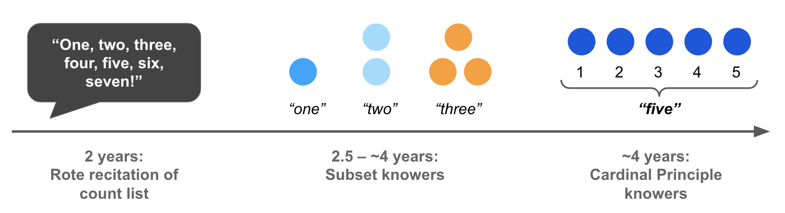

Methods
Number Development
While children begin to recite the count list at a very young age (usually by around 2 years; Fuson, 1988), it takes them several years to learn the meanings of the individual words in the count list. For instance, if you ask 2-year-old who can count up to 10 for a set of 3 items, they may give you a random handful. Initially, children can recite a rote count list, like the alphabet. This ability to recite the count list is often measured by the “Highest Count” task.
Instead of learning the meanings of all these number words at once, children learn them one at a time over the course of several months. This has been shown using a variety of methods including the Give-a-Number task (Wynn, 1990), in which children are asked to give different numbers of objects to an experimenter. Children typically begin by learning the meaning of “one,” and can give one thing when asked, but are unable to reliably give larger numbers. Some time later, children learn the meaning of “two,” and then “three” a few months after that. During this period, children are called “subset-knowers,” because they understand only a subset of the number words in their count list. Also, even though subset-knowers are often very good at reciting the count list, they do not reliably use it to count numbers they know, suggesting that they don’t understand how counting represents number.
Sometime after learning these first few number words, children learn how to use counting to generate large numbers, and no longer need to learn the meanings of number words one by one. At this point, children are called Cardinal Principle (or CP)-knowers, meaning that they understand how the last word said while counting indicates the cardinality of a set (Gelman & Gallistel, 1978).

About Give-N
The Give-a-Number task allows researchers to measure what children know about the meanings of number words and counting. In the task, an experimenter asks the child to generate different numbers of objects. For example, the experimenter might ask children to “Put three bananas on the plate.” To identify the largest number that children comprehend, many different designs have been used. One key distinction is between titrated and non-titrated versions of Give-a-Number (Marchand et al., 2022). In the non-titrated version, the experimenter tests the child on a predetermined set of number words – e.g., the words “one”, “two”, “three”, “four”, “five”, “six”, “eight”, and “ten”. In such versions, it is typical for each number to be assessed three times, with numbers tested in pseudo-random order. By contrast, in the titrated version of the task, the experimenter might begin by testing the child with a particular number word – e.g., “two” and then testing them on a larger number if they succeed, but a smaller number if they fail, on each subsequent trial. In this way, they continue until they find the largest number for which the child provides correct responses on 2/3 trials (sometimes with the additional constraint that on 2/3 of trials that this number of objects, n, is given, it is in response to requests for n objects). For example, a child who can only reliably give sets of 1 and 2 is a “two-knower,” while a child who can generate sets of 5+ is generally classified as a “CP-knower.”
Numberbank aggregates Give-N data from many labs. It represents the knower levels that children have attained at different ages and in different languages. Also, it represents how they respond to individual trials during the task – e.g., how many objects they give when asked for “three”. Children are classified into the following knower levels:
- Non-Knowers: Children who don’t know the meanings of any number words
- One-Knowers: Children who have an exact label for sets of up to one
- Two-Knowers: Children who have an exact label for sets of up to two
- Three-Knowers: Children who have an exact label for sets of up to three
- Four-Knowers: Children who have an exact label for sets of up to four
- Five-Knowers: Children who have an exact label for sets of up to five
- Cardinal Principle Knowers: Children who can reliably count and give sets larger than 4 or 5 (depending on how this is defined in a particular study)
Numberbank reports knower levels that were assigned to children by the researchers, acknowledging that the methods used to assign knower levels may vary across different labs. However, raw data can be downloaded, allowing researchers to reclassify children according to different criteria. Future versions of Numberbank may also allow researchers to decide upon different classification criteria, where trial-by-trial data make this possible (sometimes researchers have only provided the final knower level, without trial data).
About Highest Count
In the Highest Count task, children’s ability to recite the count list is tested by asking them to count as high as they can. Sometimes researchers record the child’s initial highest count – the point they reach before they make their first error or omission. Sometimes they also record their final highest count – the number they reach after recovering from an error, or after a protocol of prompts (depending on the methods of a particular study).
Numberbank represents children’s highest counts and by default displays only initial counts as reported by researchers.
References
Fuson, K. C. (1988). Children’s counting and concepts of number. New York: Springer-Verlag.
Gelman, R. and Gallistel, C. R.: 1978, The Child’s Understanding of Number, Harvard University Press, Cambridge.
Wynn, K. (1990). Children’s understanding of counting. Cognition, 36(2), 155-193.